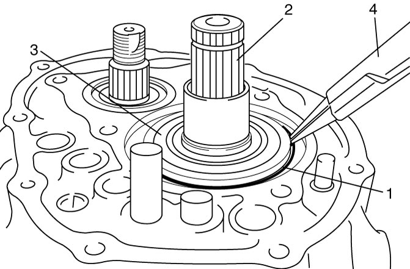

5B
| Manual Transaxle Assembly Disassembly and Reassembly |
Disassembly
1)Remove gear shift & select shaft assembly. 
2)Remove input shaft 5th gear and countershaft 5th gear.
3)Remove left case plate bolts (3).
4)Remove left case plate (1) and bearing set shim (2).
5)Remove snap ring (6) using snap ring pliers (4).

 "Expand image")
 "Expand image")
| 5. | Input shaft | 7. | Input shaft left bearing |
6)Remove back up light switch.
7)Remove reverse gear shaft bolt (1) with gasket.
 "Expand image")
8)Remove transaxle case bolts (1).
 "Expand image")
9)Remove transaxle left case (1) from transaxle right case (2) using special tool.
 "Expand image")
10)Remove reverse gear shift lever bolts (4) and reverse gear shift lever (5).
11)Pull out reverse gear shaft (1) with washer (2), and then take off reverse idler gear (3).
12)Pull out 5th & reverse gear shift shaft (6).
NOTE:
When removing 5th & reverse gear shift shaft, push up high speed gear shift shaft and shift it to 4th to facilitate removal of 5th & reverse shift shaft.
 "Expand image")
13)Remove countershaft left bearing outer race (1) from transaxle left case (2) using special tool.
 "Expand image")
14)Remove differential side oil seal.
15)By tapping input shaft end with plastic hammer, push it out as assembly from case a little, and then remove input shaft assembly (1), countershaft assembly (2), high speed gear shift shaft (3) and low speed gear shift shaft (4) all together.
 "Expand image")
16)Remove differential assembly from transaxle right case.
Reassembly
1)Install differential assembly into transaxle right case.
2)Join input shaft (5), countershaft (4), low speed gear shift shaft (2) and high speed gear shift shaft (3) assemblies all together, and then install them into transaxle right case (1).
NOTE:
•Do not damage oil seal by input shaft spline while installing.
•Check that countershaft is engaged with final gear.
•Check that countershaft is engaged with final gear.
 "Expand image")
3)Install 5th & reverse gear shift shaft (1) into transaxle right case (2). At the same time, join reverse gear shift arm (4) and reverse gear shift lever (3).
 "Expand image")
4)Mate reverse idler gear (1) with reverse gear shift lever (2), insert reverse gear shaft (3) and washer (6) into case (4) through idler gear and then align bolt hole (7) on shaft with notch (8) on case.
5)Tighten reverse gear shift lever bolts (5) to specified torque.
NOTE:
Check that reverse gear shift lever end has clearance “a” to idle gear groove.
Clearance between lever end and idle gear groove
“a”: 0.5 – 1.0 mm (0.02 – 0.04 in)
 "Expand image")
6)Install right case to left case as follows.
a)Clean mating surfaces of right case and left case.
b)Apply specified amount of sealant to left case (1) as shown in figure.
Sealant amount for left case
“a”: 1.5 mm (0.059 in.)
 "Expand image")
c)Mate right case with left case.
7)Tighten transaxle case bolts to specified torque.
 "Expand image")
8)Install new reverse gear shaft bolt (1) and new gasket, and tighten it to specified torque.
NOTICE:
Reverse gear shaft bolt is pre-coated with adhesive. If the bolt is reused, it may work loose.
Replace the reverse gear shaft bolt with new one once it is removed.
 "Expand image")
9)Install new snap ring (1) using snap ring pliers (4).

 "Expand image")
| 2. | Input shaft | 3. | Input shaft left bearing |
10)To seat countershaft left bearing outer race (1) to bearing cone, tap countershaft left bearing outer race using special tool and plastic hammer (3).
 "Expand image")
| 2. | Input shaft |
11)Select countershaft 5th gear shim as follows.
a)Push down bearing outer race and measure clearance between transaxle right case and bearing outer race using straightedge (1) and feeler gauge (2).
 "Expand image")
b)Select a shim which fits the clearance measured above.
Available shim thickness
| Clearance | Applicable shim |
|---|---|
| 0.42 – 0.47 mm (0.0166 – 0.0185 in.) |
0.55 mm (0.0217 in.) |
| 0.48 – 0.52 mm (0.0189 – 0.0204 in.) |
0.60 mm (0.0236 in.) |
| 0.53 – 0.57 mm (0.0209 – 0.0224 in.) |
0.65 mm (0.0256 in.) |
| 0.58 – 0.62 mm (0.0229 – 0.0244 in.) |
0.70 mm (0.0276 in.) |
| 0.63 – 0.67 mm (0.0249 – 0.0263 in.) |
0.75 mm (0.0295 in.) |
| 0.68 – 0.72 mm (0.0268 – 0.0283 in.) |
0.80 mm (0.0315 in.) |
| 0.73 – 0.77 mm (0.0288 – 0.0303 in.) |
0.85 mm (0.0335 in.) |
| 0.78 – 0.82 mm (0.0308 – 0.0322 in.) |
0.90 mm (0.0354 in.) |
| 0.83 – 0.87 mm (0.0327 – 0.0342 in.) |
0.95 mm (0.0374 in.) |
| 0.88 – 0.92 mm (0.0347 – 0.0362 in.) |
1.00 mm (0.0394 in.) |
| 0.93 – 0.97 mm (0.0367 – 0.0381 in.) |
1.05 mm (0.0413 in.) |
| 0.98 – 1.02 mm (0.0386 – 0.0401 in.) |
1.10 mm (0.0433 in.) |
| 1.03 – 1.07 mm (0.0406 – 0.0421 in.) |
1.15 mm (0.0453 in.) |
c)Put the thickest spare part shim on bearing outer race and install left case plate (2).
d)Tighten used bolts (1) to specified torque.
e)Turn countershaft (3) 10 times or more.
 "Expand image")
| 4. | Input shaft |
f)Remove left case plate.
g)Place straightedge (1) over shim (3) and compress it by hand through straightedge, and measure “a” using feeler gauge (2).
Clearance between case surface and straightedge
“a”: 0.08 – 0.12 mm (0.0031 – 0.0047 in.)
h)If clearance “a” is out of specification, select suitable shim which adjusts clearance “a” to specification and put it on bearing outer race.
NOTE:
Insert 0.1 mm (0.004 in.) feeler to check whether or not a shim fulfills specification.
 "Expand image")
12)Install left case plate (2), and then tighten new left case plate bolts (1) to specified torque.
NOTICE:
Left case plate bolt is pre-coated with adhesive. If the bolt is reused, it may work loose.
Replace the left case plate bolt with new one once it is removed.
NOTE:
After tightening bolts, check that countershaft (3) can be rotated by hand with certain load.
| 4. | Input shaft |
13)Install input shaft 5th gear and countershaft 5th gear.
14)Install gear shift & select shaft assembly.
15)Install back up light switch.
16)Check input shaft for rotation in each gear position.
17)Check back up light switch for continuity with gears in reverse position using ohmmeter.